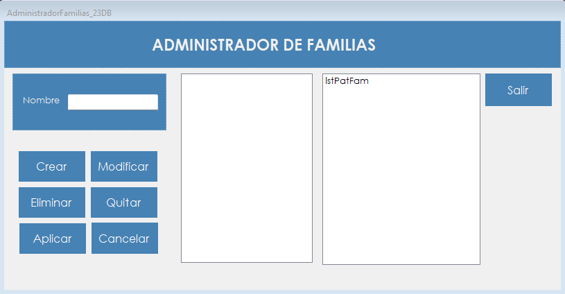

Permite agrupar patentes en familias reutilizables, para asignar varios permisos de una sola vez a los roles.
Una patente habilita una función concreta del sistema. Cuando varias funciones suelen ir juntas, conviene agruparlas en una familia: en lugar de agregar las patentes una por una a cada rol, se agrega la familia completa.
Una familia puede contener patentes y también otras familias. Además, al cambiar su contenido se mantiene un único lugar donde administrar ese conjunto de permisos.
Desde el menú principal, en Administrador › Gestion de Perfiles › Administrador de Familias. La opción aparece si el rol del usuario incluye la patente correspondiente.

| Control | Para qué se usa |
|---|---|
| Nombre | Nombre de la familia. |
| Lista del centro | Muestra en forma de árbol lo que contiene la familia que se está armando o modificando. |
| Lista de la derecha | Muestra las patentes y las familias existentes. Con doble clic, un elemento pasa a la lista del centro. Con un clic en una familia, se habilitan Modificar y Eliminar. |
| Crear | Crea una familia con el nombre escrito y los elementos de la lista del centro. |
| Modificar | Carga la familia seleccionada para editarla. |
| Eliminar | Elimina la familia seleccionada. |
| Quitar | Durante una modificación, saca de la familia el elemento elegido en la lista del centro. |
| Aplicar | Guarda los cambios de la modificación en curso. |
| Cancelar | Descarta lo cargado y deja la pantalla como al abrirla. |
| Salir | Cierra la pantalla. |
Solo se puede eliminar una familia vacía, que además no esté en uso por ningún rol ni por otra familia.
| Situación | Qué significa y qué hacer |
|---|---|
| "Debe ingresar un nombre para la Familia." | El campo Nombre está vacío. |
| "Debe seleccionar al menos un elemento." | Una familia nueva necesita al menos una patente u otra familia. |
| "Ya existe una Familia con ese nombre." | Hay que elegir otro nombre. La comparación no distingue mayúsculas de minúsculas. |
| "Familia creada correctamente." | La familia ya se puede usar en Administrador de roles. |
| "La Familia contiene patentes que ya están incluidas." | Alguna patente de la familia elegida ya está en la lista del centro. |
| "La patente '" seguido del nombre de la patente, "' ya está incluida." | Esa patente ya está en la lista del centro, sola o dentro de otra familia. |
| "El elemento ya fue agregado." | Ese elemento ya figura en la lista del centro. |
| "Debe seleccionar una Familia." | Hay que hacer clic en una familia de la lista de la derecha. |
| "Solo se pueden modificar Familias." | El elemento seleccionado es una patente. |
| "Solo se pueden eliminar Familias." | El elemento seleccionado es una patente. |
| "No se puede eliminar una Familia que está siendo usada por un Rol." | Primero hay que quitarla de ese rol en Administrador de roles. |
| "No se puede eliminar una Familia que está siendo usada por otra Familia." | Primero hay que quitarla de la familia que la contiene. |
| "No se puede eliminar una Familia que tiene componentes." | Primero hay que modificarla y quitar todos sus elementos. |
| "¿Está seguro que desea eliminar la Familia" seguido del nombre de la familia | Con Sí la familia se elimina; con No no cambia nada. |
| "Familia eliminada correctamente." | La familia dejó de existir. |
| "Debe seleccionar un elemento." | Hay que elegir un elemento de la lista del centro antes de presionar Quitar. |
| "Familia modificada correctamente." | Los cambios quedaron guardados. |
| "La operación se registró correctamente, pero no pudo asentarse en la Bitácora:" seguido del motivo | El cambio se guardó, pero el evento no quedó en la bitácora. Después de los dos puntos se muestra el motivo técnico. |